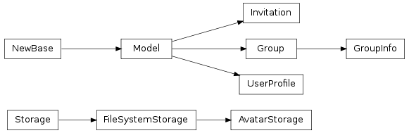
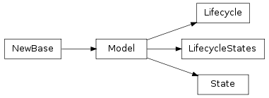
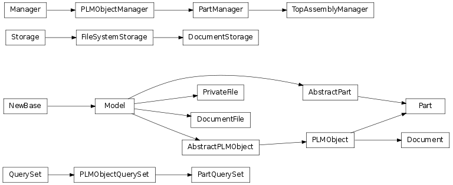
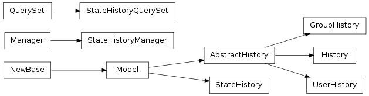
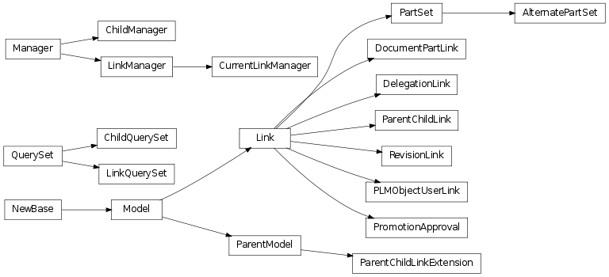

Table Of Contents
- 5.12. models — models for openPLM
Previous topic
5.11. mail — Tools to send mails
Next topic
5.13. navigate — Tools to generate navigation’s graph

5.11. mail — Tools to send mails
5.13. navigate — Tools to generate navigation’s graph
Models for openPLM
This module contains openPLM’s main models.
PLMObject is the base class





Note
This module imports all the following functions and classes.
Bases: django.db.models.base.Model
Profile for a User
True if user is an administrator
True if user is a contributor
New in version 1.1: True if user can publish a plmobject
New in version 1.1: True if user has a restricted account
language
Bases: django.contrib.auth.models.Group
Class that stores additional data on a Group.
menu items to choose a view
Bases: django.db.models.base.Model
State : object which represents a state in a lifecycle
name of the state, must be unique
Bases: django.db.models.base.Model
Lifecycle : object which represents a lifecycle
name of the lifecycle, must be unique
Note
A Lifecycle is iterable and each iteration returns a string of the next state.
See also
LifecycleList A class that simplifies the usage of a LifeCycle
Converts a Lifecycle to a LifecycleList (a list of strings)
Builds a Lifecycle from cycle. The built object is save in the database. This function creates states which were not in the database
| Parameters: | cycle (LifecycleList) – the cycle used to build the Lifecycle |
|---|---|
| Returns: | a Lifecycle |
Bases: django.db.models.base.Model
A LifecycleStates links a Lifecycle and a State.
The link is made with a field rank to order the states.
Returns the default Lifecycle used when instanciate a PLMObject
A decorator that caches the result of func.
func must take one argument: a PLMObject and its returned value should only depends on the state and the lifecycle of the given PLMObject (and not its type).
The maximum cache size will be the number of LifecycleStates. Each key of the cache is a tuple (state’s name, lifecycle’s name).
Bases: django.db.models.query.QuerySet
A QuerySet with extra methods to filter results by their state.
Bases: django.db.models.manager.Manager
Manager for PLMObject. Uses a PLMObjectQuerySet.
Bases: django.db.models.base.Model
Abstract model that redefines the PLMObject.objects manager.
This model is abstract so that child classes inherits the manager.
Bases: openPLM.plmapp.models.plmobject.AbstractPLMObject
Base class for Part and Document.
A PLMObject is identified by a triplet reference/type/revision
| Key attributes: | |
|---|---|
| Other attributes: | |
|
|
Changed in version 1.1: published and reference_number added.
Returns True if object is promotable
Note
This method is abstract and raises NotImplementedError. This method must be overriden.
Returns an ErrorList of promotion errors. Calls is_promotable() if it has not already been called.
Returns an ErrorList of promotion errors. Calls is_promotable() if it has not already been called.
New in version 1.1.
Return true by default. This property may be overriden by custom Part or Document
True if the object is in a state prior to the official state but not draft.
Note
The result of this function is cached with _cache_lifecycle_stuff().
True if the object is cancelled.
Note
The result of this function is cached with _cache_lifecycle_stuff().
True if the object is deprecated.
Note
The result of this function is cached with _cache_lifecycle_stuff().
Returns True if object is official.
Note
The result of this function is cached with _cache_lifecycle_stuff().
Returns True if the object is a draft.
Note
The result of this function is cached with _cache_lifecycle_stuff().
Returns the current sign level that a user must have to promote this object.
Note
The result of this function is cached with _cache_lifecycle_stuff().
Returns the current sign level that a user must have to demote this object.
Note
The result of this function is cached with _cache_lifecycle_stuff().
New in version 1.1.
Attributes that are visible to everyone if the object has been published.
Menu items to choose a view
Returns fields which should not be available in a creation form
Returns fields which should be displayed in a creation form.
By default, it returns attributes less attributes returned by excluded_creation_fields()
Returns fields which should not be available in a modification form
Returns fields which should be displayed in a modification form
By default, it returns attributes less attributes returned by excluded_modification_fields()
Bases: openPLM.plmapp.models.plmobject.PLMObjectQuerySet
A PLMObjectQuerySet with extra methods to annotate results with the number of children or parents.
Bases: openPLM.plmapp.models.plmobject.PLMObjectManager
Manager for Part. Uses a PartQuerySet.
Shorcut for self.get_query_set().with_children_counts(). See PartQuerySet.with_children_counts().
Shorcut for self.get_query_set().with_parents_counts(). See PartQuerySet.with_parents_counts().
Bases: openPLM.plmapp.models.part.PartManager
A PartManager that returns only top assemblies. A top assemblies is a part with at least one child and no parents.
Bases: django.db.models.base.Model
Abstract model that defines two managers:
default manager, a PartManager
Bases: openPLM.plmapp.models.part.AbstractPart, openPLM.plmapp.models.plmobject.PLMObject
Model for parts
Returns True if the part is promotable.
A part is promotable if:
its state is not the last state of its lifecycle
if the part is official.
the part is draft or proposed and:
- there is a next state in its lifecycle and if its children
which have the same lifecycle are in a state as mature as the object’s state.
if the part has no children, there is at least one official document attached to it.
Bases: django.core.files.storage.FileSystemStorage
File system storage which stores files with a specific name
Returns a path for a file name, the path always refers to a file which does not already exist.
a directory which name is the last extension of name. For example, it is .gz if name is .a.tar.gz. If name does not have an extension, the directory is .no_ext/.
For example, if name is .my_file.tar.gz, a possible output is:
.gz/c7bfe8d00ea6e7138215ebfafff187af-jj6789g.gz
If name is .my_file, a possible output is:
.no_ext/59c211e8fc0f14b21c78c87eafe1ab72-dhh5555
DocumentStorage instance which stores files in settings.DOCUMENTS_DIR
FileSystemStorage instance which stores thumbnails in settings.THUMBNAILS_DIR
Bases: django.db.models.base.Model
Changed in version 1.2: New attributes: ctime, end_time, deleted, revision, previous_revision, last_revision
Model which stores informations of a file bounded to a Document
| Model attributes: | |
|---|---|
|
|
Returns the native DocumentFile related to this DocumentFile if settings.ENABLE_NATIVE_FILE_MANAGEMENT is True.
Returns False if there are no native DocumentFile related.
Bases: django.db.models.base.Model
New in version 1.2.
Model which stores informations of a private file only readable by its creator.
There are no revision, locker, deleted or similar attributes. A private file is not shared, and it is temporary. It is created to store a file before a document creation.
Private files are created when a user uploads files and then creates a document containing these files.
| Model attributes: | |
|---|---|
|
|
Bases: openPLM.plmapp.models.plmobject.PLMObject
Model for documents
Queryset of all non deprecated DocumentFile linked to self
Queryset of all deprecated DocumentFile linked to self
Returns True if the object is promotable. A document is promotable if there is a next state in its lifecycle and if it has at least one file and if none of its files are locked.
New in version 2.0.
Returns a score (an integer) computed from files. files is a list of PrivateFile uploaded by a user who wants to create a document with all files.
The class which returns the highest score is chosen has the default type after an upload.
The default implementation returns 10 if the current class is Document and 0 otherwise.
For example, Document3D returns 50 if a CAD file has been uploaded. Document3D is so preferred when a STEP file is uploaded.
See also
Returns a dict<doc_name, doc_class> of all available Document classes
Returns a dict<doc_name, doc_class> of all available subtype classes
New in version 2.0.
Returns the document type (str) which returns the highest creation score for the uploaded files (list of PrivateFile).
See also
Bases: django.db.models.base.Model
History model. This model records all events related to PLMObject
| Model attributes: | |
|---|---|
|
|
| Class attribute: | |
some actions available in the admin interface
Bases: openPLM.plmapp.models.history.AbstractHistory
History(id, action, details, date, user_id, plmobject_id)
Bases: openPLM.plmapp.models.history.AbstractHistory
UserHistory(id, action, details, date, user_id, plmobject_id)
Bases: openPLM.plmapp.models.history.AbstractHistory
GroupHistory(id, action, details, date, user_id, plmobject_id)
Bases: django.db.models.query.QuerySet
QuerySet with utility methods to filter StateHistory alive at a given time.
Bases: django.db.models.manager.Manager
state histories manager, returns a StateHistoryQuerySet.
Shorcut for self.get_query_set().now(). See StateHistoryQuerySet.now().
Shorcut for self.get_query_set().at(time). See StateHistoryQuerySet.at().
Shorcut for self.get_query_set().officials(). See StateHistoryQuerySet.officials().
Bases: django.db.models.base.Model
Models that tracks the promotions and demotions of a PLMObject.
| Model attributes: | |
|---|---|
Valid state’s categories are: |
|
Bases: django.db.models.query.QuerySet
QuerySet with utility methods to filter links alive at a given time.
Bases: django.db.models.manager.Manager
Links manager, returns a LinkQuerySet.
Shorcut for self.get_query_set().now(). See LinkQuerySet.now().
Shorcut for self.get_query_set().at(time). See LinkQuerySet.at().
Shorcut for self.get_query_set().end(). See LinkQuerySet.end().
Bases: openPLM.plmapp.models.link.LinkManager
Manager which returns alive links.
Bases: django.db.models.base.Model
Abstract link base class.
This class represents a link between two PLMObject
| Model attributes: | |
|---|---|
|
|
| Class attributes: | |
|
|
Bases: openPLM.plmapp.models.link.Link
Link between two Part: a parent and a child
| Model attributes: | |
|---|---|
|
|
Returns unit as a human readable string. If unit equals to “-”, returns an empty string.
Returns a queryset of bound ParentChildLinkExtension.
Returns a dictionary of extension data. The returned value can be passed as a valid arguement to clone().
Clone this link.
It is possible to pass additional arguments to override some original values.
| Parameters: |
|
|---|---|
| Returns: | a tuple (cloned link, list of cloned extensions) |
Example:
>>> print link
ParentChildLink<Part<PART_2/MotherBoard/a>, Part<ttd/RAM/a>, 4.000000, -, 10>
>>> link.extensions
[<ReferenceDesignator: ReferenceDesignator<m1,m2,>>]
>>> clone, ext = link.clone(False,
... {"referencedesignator" : { "reference_designator" : "new_value"}},
... quantity=51)
>>> print clone
ParentChildLink<Part<PART_2/MotherBoard/a>, Part<ttd/RAM/a>, 51.000000, -, 10>
>>> print ext
[<ReferenceDesignator: ReferenceDesignator<new_value>>]
Bases: openPLM.plmapp.models.link.ParentModel
Extension of a ParentChildLink used to store additional data.
This class is abstract, subclass must define the clone() method, add at least one field (or it would be useless) and may override get_visible_fields() or get_editable_fields().
See also
Extensions explains how to subclass this class.
Returns the list of visible fieldnames.
By default, returns an empty list.
Returns the list of editable fields.
By default, returns get_visible_fields().
Returns True if only one extension should be created per link.
By default return True if get_visible_fields() returns a non empty list.
Returns True if this extension applies to parent.
| Parameters: | parent (Part (its most specific subclass).) – part which will have a new child |
|---|
Returns True by default.
Clone this extension.
Subclass must define its implementation. and respect the following specification:
| Parameters: |
|
|---|---|
| Returns: | the cloned extension |
Register PCLE so that openPLM can show its visible fields.
| Parameters: | PCLE (a subclass of ParentChildLinkExtension.) – the registered PCLE |
|---|
Returns the list of registered ParentChildLinkExtension that applied to parent.
Bases: openPLM.plmapp.models.link.Link
Link between two revisions of a PLMObject
| Model attributes: | |
|---|---|
Bases: openPLM.plmapp.models.link.Link
Link between a Part and a Document
| Model attributes: | |
|---|---|
Bases: openPLM.plmapp.models.link.Link
Link between two User to delegate his rights (abstract class)
| Model attributes: | |
|---|---|
|
|
Bases: openPLM.plmapp.models.link.Link
Link between a User and a PLMObject
| Model attributes: | |
|---|---|
|
|
Bases: openPLM.plmapp.models.link.Link
New in version 1.2.
Model to track a promotion approval
| Model attributes: | |
|---|---|
|
|